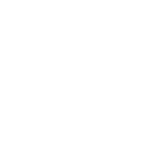
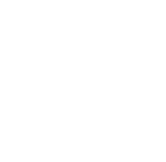
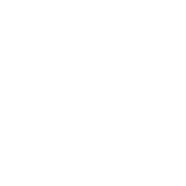
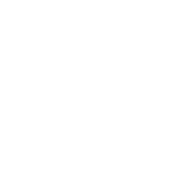

Voordat ik begon met code schrijven heb ik de opleiding grafisch vormgeven aan het grafisch lyceum in Rotterdam gedaan. Tijdens de opleiding heb ik een keer een website mogen maken met Wordpress. Al snel belandde ik in het schrijven van code en hoe meer ik er in verdiepte hoe nieuwsgieriger ik er naar werd.
Nog niet zo kort gelden heb ik de opleiding front-end engineer bij code cademy afgerond. Ik leerde o.a. de talen html, css en javascript aan de hand van het maken van projecten. Nu kan ik niet wachten om een plek in de arbeidsmarkt te vinden waar ik aan slag kan met alles wat ik geleerd heb.
Grafisch vormgeven
aan het grafisch Lyceum
Front-end engineer
bij Code Cademy
Learn Intermediate Css
bij Code Cademy
Fotografie
naar pexels page
Tijdens mijn opleidingen heb ik met verschillende soorten programmas mogen werken en leerde ik verschillende code talen schrijven. Hieronder staat een overzicht van de meest gebruikte programmas en code talen. Tijdens mijn opleidingen en in mijn vrijetijd werk ik met mac.

Adobe photoshop
Adobe Illustrator
Git
ReduxTijdens mijn opleiding heb ik verschillende projecten gemaakt. Daarvan heb ik er vier uitgekozen. Twee er van zijn ook online te bekijken en uit te proberen.
Een praktische webapp voor het maken van verschillende soorten paswoorden zodat je zelf niet lang hoeft na te denken wanneer je een nieuw wachtwoord nodig hebt. Je kunt verschillende lengtes instellen kiezen of er letters cijfers en speciale tekens gebruikt mogen worden en je kunt de webapp meerdere keren achter elkaar gebruiken.
Deze webapp is perfect voor reislustige mensen. Wanneer je op de plaats van bestemming bent vul je de naam van de stad of dorp in waar je bent en de webapp laat zien wat er allemaal te doen is in de omgeving. Ook staat het adres erbij vermeld zodat je er meteen naartoe kunt.
Een verenvoudigde en stijlvolle manier om overzichtelijk nieuwe playlisten voor Spotify te kunnen maken. Dit was een opdracht voor Codecademy waar ik ontzettend veel van geleerd heb en o.a. heb leren werken met React.
Heeft mijn portfolio website je interesse gewekt? Aarzel niet en neem gelijk contact op.
stuur een mail in eigen e-mailprogramma
stuur mailstuur een bericht in facebook messenger
stuur bericht